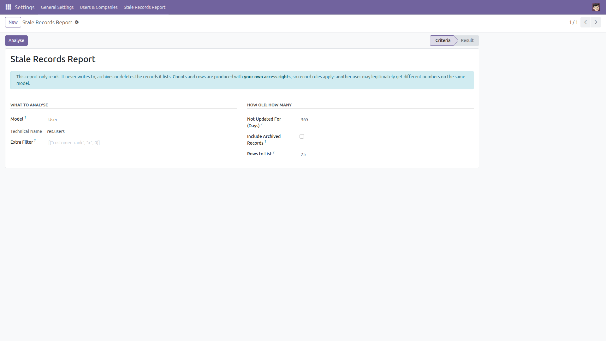
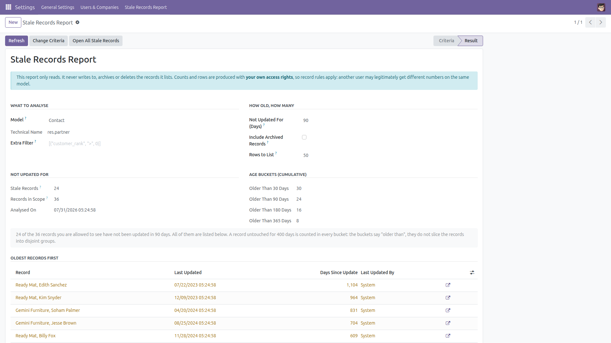
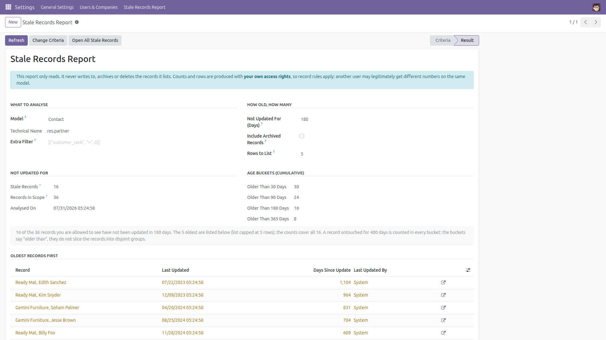
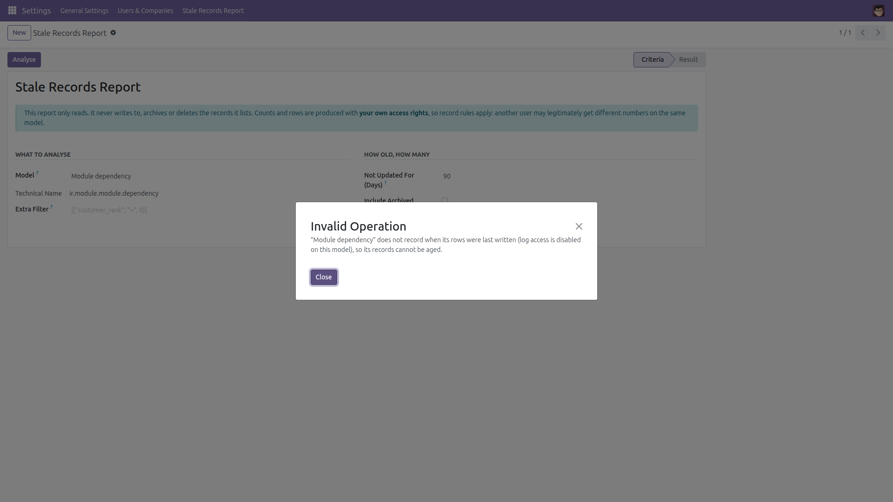
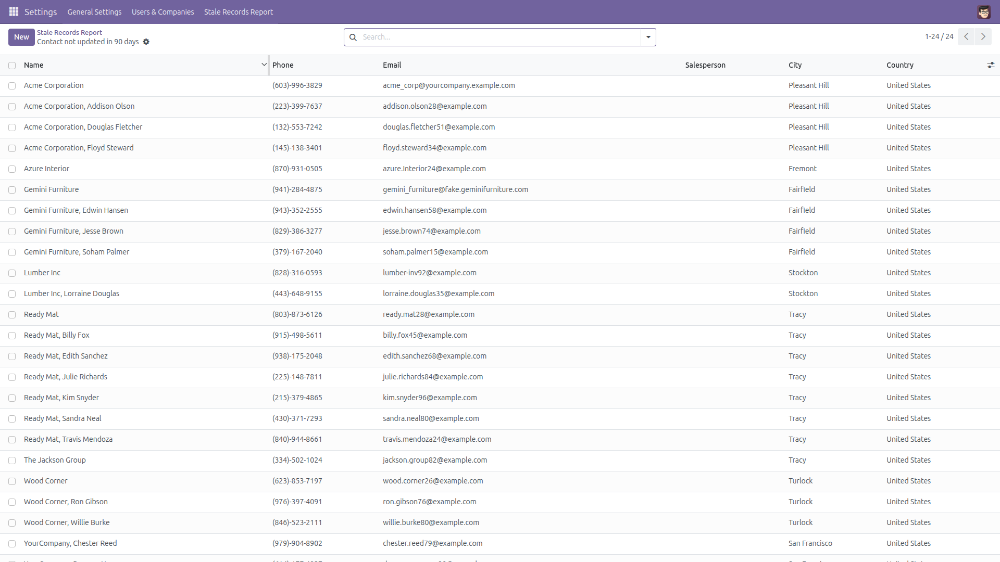

Stale Records Report
What has not been touched lately?
Data quality rots quietly. Leads nobody touched in a year, contacts last edited in 2019, products untouched since the import — nothing warns you, and Odoo has no screen that answers the question. This module adds a read-only report you can point at any model: pick the model, an age in days and (optionally) an extra filter, and get the counts by age together with the oldest records, their last-update date and their last writer.
Free and open source (LGPL-3), Odoo 14.0 through 19.0.
- Any model — contacts, leads, products, projects, your own custom models: anything that keeps a last-update date.
- Counts by age bucket — how many records are older than 30, 90, 180 and 365 days, plus the exact count for the age you asked for.
- The oldest records, listed — with the real last-update date, how many days ago that was, and the user who wrote them last.
- One click to the record — open any listed record in its own form, or hand the whole selection over to the ordinary list view of that model.
- An optional extra filter — a plain Odoo domain, e.g.
[("customer_rank", ">", 0)], to narrow the report to the records you care about.
- Honest about access rights — every query runs as you, so record rules apply and the report can never show a record you could not open yourself. The screen says so.
- Built for big tables — the counts are aggregate queries and the list is a single capped search, so the table itself is never read row by row: only the rows you asked to see.
- Your report is yours — the report rows are protected by a record rule, so one user can never read the results another user produced.
- Strictly read-only — it never writes to, archives or deletes the records it reports on. The only rows it stores are your own report parameters, in a temporary table Odoo clears by itself.
Screenshots

Pick the model, the age and how many rows to list, then press Analyse.

Counts by age bucket, then the oldest records with their last-update date and last writer.

When more records are stale than the list can show, the result says so instead of hiding them.

A model that keeps no last-update date is refused with a plain explanation — not a zero, and not a traceback.

Open All Stale Records hands the whole selection over to the ordinary list view, where you can filter, group and export it.
Installation
- Copy the module into your addons path, or install it from the Apps list.
- Open Apps, remove the “Apps” filter, search for Stale Records Report and click Install.
- Only the standard
base module is required.
Configuration
- No configuration is needed — the report works as soon as the module is installed.
- The menu Settings → Stale Records Report is shown to Administration / Settings users.
- The report itself may be used by any internal user, because it can never show more than that user is already allowed to see. If you want a data-quality team to use it, point a menu or an action of your own at the
stale.records.wizard model — no code change is needed.
Usage
- Go to Settings → Stale Records Report.
- Choose the Model (Contact, Lead, Product, …) and the age in days — 90 by default.
- Optionally add an Extra Filter as a literal Odoo domain, e.g.
[("customer_rank", ">", 0)] for customers only, and tick Include Archived Records if archived rows should count too.
- Set Rows to List (50 by default, 500 maximum) and press Analyse.
- Read the counts, then work through the listed records — the arrow at the end of each row opens it. Open All Stale Records opens the complete selection in the normal list view, ready to filter, group or export.
- Change Criteria returns to the form; Refresh re-runs the same analysis against today's data.
What it does not do, and why
- It never changes the records it reports on. None of them is written, archived or deleted — not even the ones it lists. (Your own criteria and result rows are stored in a temporary table that Odoo clears by itself.) If you want stale records archived automatically, my companion module Automatic Archiving Rules (
auto_archive_stale_records) does that on a schedule. It is a separate, optional install; this module does not depend on it and does not install it.
- Counts are what you may see. The queries run with your access rights, so a user restricted by a record rule gets smaller numbers than an administrator on the same model. That is deliberate, and the report says it on screen.
- Models without a last-update date cannot be reported on. Abstract models, wizard (transient) models and the few models where Odoo disables log access have no
write_date; they are refused with an explanation rather than reported as “nothing stale”.
- A model you cannot read is refused instead of being counted for you.
- “Last updated” is Odoo's
write_date. It changes whenever any field of the record is written — including by an automated job or an import — so a record touched only by a bulk update looks fresh. The Last Updated By column shows who that was.
- The age buckets are cumulative. A record untouched for 400 days is counted in all four ("older than 30", "older than 90", "older than 180" and "older than 365"); they do not slice the records into disjoint groups.
- The extra filter is a literal domain. Expressions such as
uid or context_today() are not evaluated.
Version notes
Identical behaviour on every supported series (14.0 – 19.0). No developer mode is required.
License: LGPL-3 · Source on GitHub · Issues and contributions welcome.